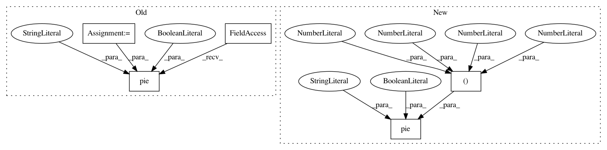

eb1b77614982745402cace64b0999b339ed3e320,examples/pie_and_polar_charts/pie_demo2.py,,,#,20
Before Change
labels = "Frogs", "Hogs", "Dogs", "Logs"
fracs = [15, 30, 45, 10]
explode = (0, 0.05, 0, 0)
// Make square figures and axes
the_grid = GridSpec(2, 2)
plt.subplot(the_grid[0, 0], aspect=1)
plt.pie(fracs, labels=labels, autopct="%1.1f%%", shadow=True)
plt.subplot(the_grid[0, 1], aspect=1)
plt.pie(fracs, explode=explode, labels=labels, autopct="%.0f%%", shadow=True)
plt.subplot(the_grid[1, 0], aspect=1)
patches, texts, autotexts = plt.pie(fracs, labels=labels,
After Change
axs[0, 0].pie(fracs, labels=labels, autopct="%1.1f%%", shadow=True)
// Shift the second slice using explode
axs[0, 1].pie(fracs, labels=labels, autopct="%.0f%%", shadow=True,
explode=(0, 0.1, 0, 0))
// Adapt radius and text size for a smaller pie
patches, texts, autotexts = axs[1, 0].pie(fracs, labels=labels,
autopct="%.0f%%",
In pattern: SUPERPATTERN
Frequency: 3
Non-data size: 5
Instances
Project Name: matplotlib/matplotlib
Commit Name: eb1b77614982745402cace64b0999b339ed3e320
Time: 2018-04-18
Author: 2836374+timhoffm@users.noreply.github.com
File Name: examples/pie_and_polar_charts/pie_demo2.py
Class Name:
Method Name:
Project Name: matplotlib/matplotlib
Commit Name: 3bbdabceb5880c9eb6b448fc4d3aa9fdd8fa83c1
Time: 2018-04-23
Author: dstansby@gmail.com
File Name: examples/pie_and_polar_charts/pie_demo2.py
Class Name:
Method Name:
Project Name: matplotlib/matplotlib
Commit Name: 9bd1e940d14ce6622da38a90df44bf6c8e942fe5
Time: 2018-04-19
Author: dstansby@gmail.com
File Name: examples/pie_and_polar_charts/pie_demo2.py
Class Name:
Method Name: